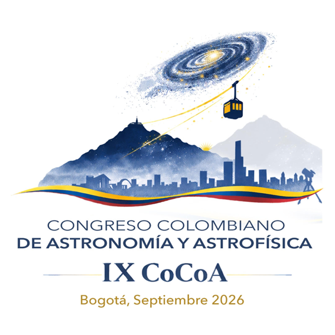
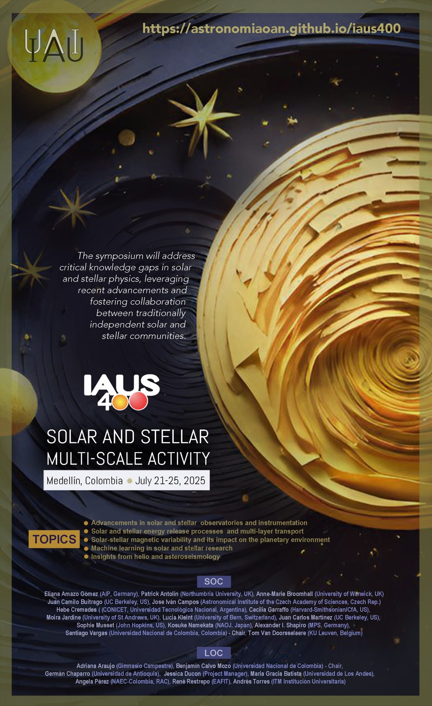

EVENTOS · OAN
Encuentros que conectan la astronomía
Congresos, escuelas y espacios de cooperación: una memoria de los encuentros impulsados por el Observatorio y sus alianzas.
Cada evento indica el papel documentado del OAN: organización, sede, comité o actividad relacionada. LARIM 2026 es organizado por instituciones mexicanas; el OAN participa en el comité científico de su taller satélite 4WAI. Las fechas pasadas se conservan como archivo, no como inscripciones abiertas.
Próximo2026
LARIM 2026 · XVIII Latin American Regional IAU Meeting
2026-11-30 / 2026-12-04 · Cancún, México
Encuentro regional relacionado
Encuentro organizado por IA-UNAM, IRyA-UNAM e INAOE. El taller 4WAI, con participación del OAN en su comité científico, forma parte de las actividades satélite.
Sitio y documentación del eventoPróximo2026
4WAI · Astronomy Beyond the Common Senses
2026-11-30 / 2026-12-01 · Cancún, México
Comité científico · Santiago Vargas
Cuarta edición del taller sobre accesibilidad e inclusión en astronomía: experiencias educativas, tecnologías de apoyo y participación de comunidades diversas.
Sitio y documentación del evento
Memoria2026
IX Congreso Colombiano de Astronomía y Astrofísica · CoCoA 2026
2026-09-01 / 2026-09-04 · Bogotá, Colombia
Coorganización y sede · OAN / UNAL
Encuentro de AstroCo, UNAL, Universidad Distrital y Uniandes. El OAN recibió las jornadas del 2 y 4 de septiembre; docentes e integrantes de su comunidad participaron en los comités.
Sitio y documentación del eventoMemoria2025
VI Colombia Espacial
2025 · Bogotá, Colombia
Organización y colaboración institucional
Encuentro sobre ciencia y tecnología espacial. Sus contribuciones cuentan con difusión en eSPECTRA y transmisiones en el canal del Observatorio.
Sitio y documentación del evento
Memoria2025
IAU Symposium 400 · Solar and Stellar Multi-Scale Activity
2025-07-21 / 2025-07-25 · Medellín, Colombia
Organización científica y local · OAN
Actividad solar y estelar a múltiples escalas. Santiago Vargas presidió el comité científico y Benjamín Calvo el comité local. Sede: Universidad EAFIT.
Sitio y documentación del eventoMemoria2024
V Colombia Espacial
2024 · Bogotá, Colombia
Coorganización · OAN y aliados
Edición vinculada al primer Foro de Cooperación Académica de Profesores China–América Latina sobre Ciencia Espacial.
Sitio y documentación del eventoMemoria2023
Colombia Espacial 2023
2023-12-13 / 2023-12-14 · Colombia
Organización · OAN y aliados
Logros tecnológicos nacionales y foros sobre proyectos aeroespaciales, con academia, industria y gobierno.
Sitio y documentación del eventoMemoria2022
Colombia Espacial 2022 · CITE22
2022 · Colombia
Organización y alianzas académicas
Encuentro conjunto con el tercer Taller de Ciencia y Tecnología Espacial para conectar iniciativas científicas, técnicas y empresariales.
Sitio y documentación del eventoMemoria2021
Colombia Espacial 2021
2021 · Virtual
Organización · OAN
Conferencias y conversaciones sobre el desarrollo espacial colombiano, conservadas en el canal institucional.
Sitio y documentación del eventoMemoria2020
Maratón Colombia Espacial
2020 · Virtual
Organización · OAN y aliados
Primera edición del ciclo, orientada a conectar la diáspora científica y las capacidades espaciales del país.
Sitio y documentación del eventoMemoria2018
41st International School for Young Astronomers · ISYA
2018-07-08 / 2018-07-28 · Socorro, Santander, Colombia
Comité organizador · Santiago Vargas y Mario Higuera
Escuela de la IAU acogida por una alianza de universidades colombianas y la Oficina Andina de Astronomía para el Desarrollo, en la sede UIS Socorro.
Sitio y documentación del eventoMemoria2016
IAU Symposium 327 · Fine Structure and Dynamics of the Solar Atmosphere
2016-10-09 / 2016-10-14 · Cartagena de Indias, Colombia
Encuentro internacional impulsado por el OAN
Simposio sobre la estructura fina y la dinámica de la atmósfera solar, celebrado en Cartagena y documentado en las memorias de la IAU.
Sitio y documentación del eventoMemoria2016
LARIM 2016 · XV Latin American Regional IAU Meeting
2016-10-03 / 2016-10-07 · Cartagena de Indias, Colombia
Organización colombiana con participación del OAN
La edición realizada en Colombia reunió a la comunidad astronómica latinoamericana. Forma parte de los antecedentes internacionales del Observatorio.
Sitio y documentación del eventoMemoria2012
Escuela Internacional de Astrofísica Solar
2012-07-03 / 2012-07-19 · Bogotá, Colombia
Organización · Observatorio Astronómico Nacional
Solar Astrophysics: Modern Trends and Techniques. Formación en física solar, observación y análisis de datos dentro de la Escuela Internacional de la UNAL.
Sitio y documentación del eventoFechas en formato año-mes-día. Cuando solo se muestra un año, la ficha no asigna una fecha más precisa. Carteles: organizaciones CoCoA 2026 e IAUS400.